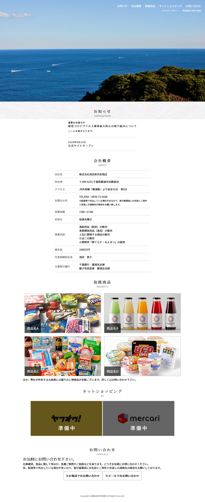
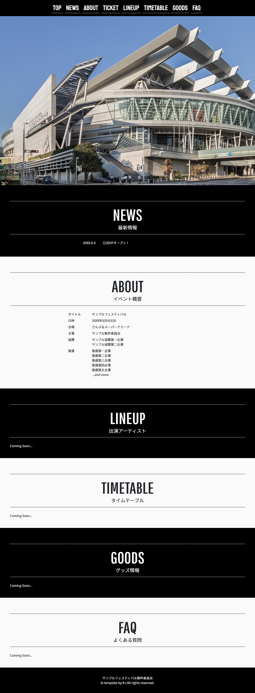

UNLIMITED MY WORKS / KENTO IKEDA
PROGRAMMER / SYSTEM ENGINEER / WEB DESIGNER / MOVIE ENGINEER
Visual Basic.NET / Java / HTML5,CSS3 / Javascript / PHP / WordPress / MySQL
© KENTO IKEDA
PROGRAMMER / SYSTEM ENGINEER / WEB DESIGNER / MOVIE ENGINEER
Visual Basic.NET / Java / HTML5,CSS3 / Javascript / PHP / WordPress / MySQL
© KENTO IKEDA
閉じる
Programmer / Microsoft Visual Basic 2013 / HTML5 / CSS3 / Windows8 Tablet
各種メニュー部分とモジュール結合、面接総合辞典の部分の製作を担当しました。
当初はストアアプリ形式での開発でしたが、途中で急遽通常のフォームアプリ形式の開発に変更となり、移植の作業が大変でした。
惜しくも優良賞という結果になりましたが、自分がはじめて携わった作品なので良き想い出のひとつです。
Source Code※担当工程箇所のみ配布しております。
※誠に恐れ入りますが、著作権等の都合上アプリケーションの直接配布やダウンロードのサービス等は行っておりません。
実際にお手を触れて確認したい際はお手数ですがお問い合わせ下さい。
閉じる
Programmer / Microsoft Visual Basic 2013 / HTML5 / CSS3 / Windows8 Largetablet / 一宮商業高校電算部公式HP「情喜源」
昨年の面接アプリ同様、メニューとそれぞれのプログラムの結合、及びオリジナル百人一首の制作部分、歌人辞典の一覧コーナーを担当しました。
制作部分の担当はかなり苦労しましたが、自分のスキルアップへの第一歩を踏み出せたような気がします。副班長としてプロジェクトを円滑に進める事が出来たので、結果、優秀賞という功績を修める事が出来ました。
平成26年（2014年）9月13日 公益財団法人全国商業高等学校協会（東京都新宿区）にて
※担当工程箇所のみ配布しております。
※誠に恐れ入りますが、著作権等の都合上アプリケーションの直接配布やダウンロードのサービス等は行っておりません。
実際にお手を触れて確認したい際はお手数ですが「Contact」よりお問い合わせ下さい。
閉じる
平成26年（2014年）12月15日 千葉県立一宮商業高等学校（千葉県長生郡一宮町）にて
Movie Edited / Narration / Sony Vegas Pro 13.0 / REAPER / WebArtDesigner
商業高校のカリキュラムには「総合実践」という授業があり、ここで3年間商業または情報処理の授業で学習し培ってきたものを使い様々な活動をやっていきます。
私の所属する情報処理科のテーマは「地元一宮の町おこし」であり、私達グループは動画でPRする事に至りました。その理由については是非上記動画をご覧ください。
基本動画を作る時には、「そのまんまTVで流れても大丈夫」・・・・のような物を作る！というのを常に意識してます。
閉じる
Web Design / Coding / HTML5 / CSS3 / Javascript / jQuery
「文書デザイン」という商業高校の授業にて、CD-ROM形式で保存される卒業アルバムのWebページを制作しました。
閉じる

閉じる

閉じる

閉じる
Programmer / Waterfall Model / Java / MySQL / JDBC / Windows PC
千葉校の専門学校での卒業演習作品として、実際の企業（インフォテックサーブ様）と連携する形での模擬システム開発を行いました。データベース周りを担当したので、SQLの奥深さを知ることができました。
※権利関係の都合上、担当箇所のモジュール公開については現在調整中です。